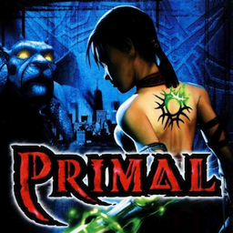

 Primal
Details
Beschreibung
Primal tells the story of Jennifer Tate, a 21-year-old woman searching for her boyfriend through a series of demonic realms. As the story develops, more is revealed about Jen's past and her relationship with her boyfriend, as well as the nature of the demon worlds.
In Primal, the player can control either Jen or Scree as they navigate the realms of Oblivion. As the game progresses, newer demonic forms are obtained, which prove invaluable in solving various puzzles and combat.
Control can be switched between Jen and Scree at any time in game. When in control of one, the other will be operated by AI, performing various functions depending on the situation. During play, the characters can interact with one another, performing actions such as asking questions, or siphoning energy.
When in control of Jen, the player may transform into one of four demonic forms for various purposes, depending on the situation (provided the forms are unlocked). When in a demon form, Jen experiences a boost in attack, defense, speed, attack range and access to abilities unavailable in a human form. The tattoo on Jen's back also glows when in a demon form, corresponding to various forms.
Defeating enemies involves weakening enemies to the point where their hit points reach zero, at which time a finishing move must be performed to kill the enemy. While the moves differ in style and time taken, the final effect remains the same. Enemies can be finished off before the health bar reaches zero, and doing so leaves more residual energy.
While Jen can remain in a demonic form indefinitely, taking damage will reduce health. However, hit points here are represented by demonic energy. When an enemy is killed, the remaining energy can be drained through use of Scree, who can store the energy for when it is needed. Jen can then call on the energy, siphoning it off to replenish her own. Scree can store a vast amount of energy, but also has limits as to how much.
When in control of Scree, the player is invulnerable; Scree, being a gargoyle, cannot suffer damage, making him an effective scout. Scree is capable of climbing on stone walls, a necessary ability when traversing the realms. Scree can also store drained energy from dead enemies, which can be used to replenish Jen's demonic health, though he must remain immobile when doing so.
Scree is revealed to be the long-lost Abdizur, who disappeared following an encounter with the lord of Chaos. In Solus, for a temporary amount of time, the player possesses a life-size statue of Abdizur via Scree, to combat Belhazur when Jen's powers are not fit to do so. The player may also possess other statues in an area under given circumstances.
The player may also happen across various energy crystals, which can be stored and used if Scree's energy reserves are not enough and the player is at low health. These crystals are kept throughout the game, the only exclusion being when revisiting previous scenes, at which point they are reduced to a default amount. This means that the crystals function as extra lives, to a degree.
If Jen is in human form, her health replenishes automatically if she is not in battle (human form only; demon energy must be replenished by either drawing on Scree's reserve energy or, failing that, by using a crystal). While in human form, Jen's health represents her presence in the demon world. If she loses all her health while in human form, she is returned to the human world, where she is in a near-death state. When this happens, the player must direct Scree to the nearest rift gate within a time limit (not seen on screen, though the voice of Arella warns the player that time is running out). If Scree does not reach a rift gate in time, Jen dies, and the game is over.
Throughout the game, constant saving can prove onerous, particularly if the player wishes to backtrack and revisit certain areas. Provided a save game is present, the player may do so, and can revisit nearly all of the locations, once they have been unlocked via an in-game cutscene.